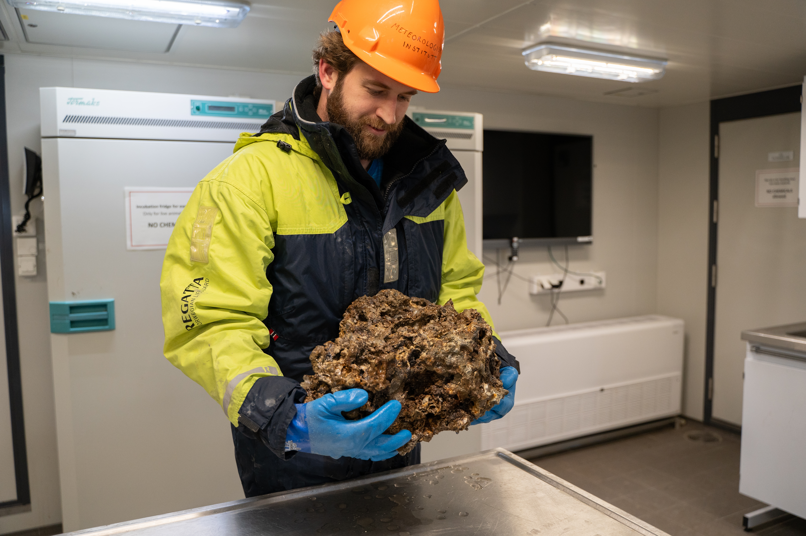

Marine cold seeps, past and present
Applying my quantitative proxy for the anaerobic oxidation of methane to cold seep carbonates from the Norwegian Margin, South China Sea, and US Atlantic Margin
Some stuff about me and my research
including a line break.
My research career has meandered through lots of fields, below are the main research themes I am currently working on. Significantly more detail on these projects and others is provided on my research page.

Applying my quantitative proxy for the anaerobic oxidation of methane to cold seep carbonates from the Norwegian Margin, South China Sea, and US Atlantic Margin

Using high-resolution measurements of CO2 and CH4 to understand variability of transport and fluxes in the Hudson River estuary and Canadian Arctic

Benchtop instruments and cutting edge in situ field deployable sensors for isotopic measurements for both my own research and in support of other projects.
Aspects of my science, my teaching, and myself.
Projects ranging from x to y to z.
1 course designed and taught, 7 courses TAed.
5 first author publications, 12 peer-reviewed publications, 63 citations, 5 h-index.
Two international oceanographic expeditions.
3 invited, 16 first-author contributed, 40 total.
An avid birder and bird photographer.